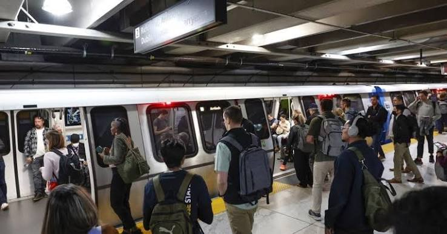
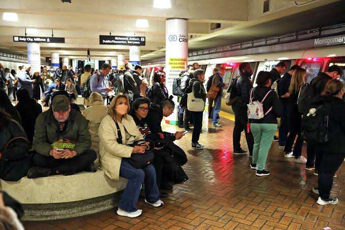
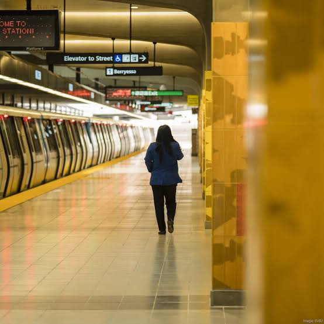
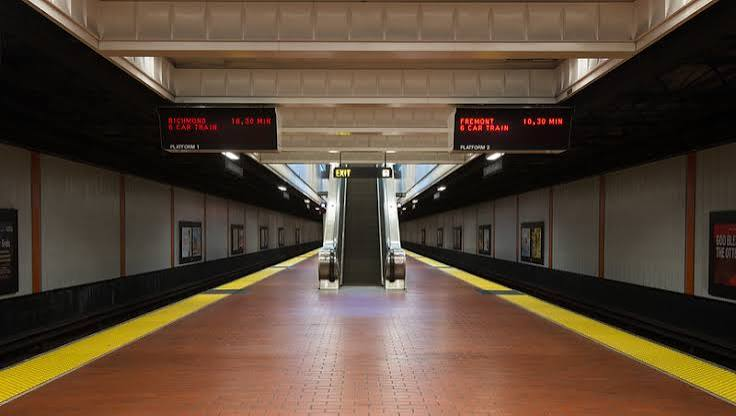

The Fiscal Cliff vs. Transit Equity: BART’s High-Stakes Battle
Facing a staggering $375 million budget deficit, Bay Area Rapid Transit (BART) stands on the precipice of a historic crisis. As ridership hovers at less than half of pre-pandemic levels, local voters face a high-stakes regional tax ballot measure.
According to BART’s official financial crisis warnings, if taxpayers reject the proposed tax increase, the agency will be forced to trigger an aggressive 'Alternative Service Plan'—shutting down up to 15 underutilized suburban stations and slashing evening services starting in 2027. As industry analyses of the looming fiscal cliff highlight, this crisis has ignited a fierce debate across the Bay Area: Should taxpayers continue subsidizing low-density 'ghost stations' to preserve transit equity, or must BART restructure its priorities to survive?
Amidst this uncertainty, this project focuses on the voices of everyday riders—exploring their direct evaluations of BART today and their visions for the transit network's future.
Background
The BART story began in 1946, not by governmental fiat but as a concept that gradually evolved at informal gatherings of business and civic leaders on both sides of San Francisco Bay. Facing heavy postwar migration and a resulting automobile boom, the leaders discussed ways to ease mounting congestion on the bridges spanning the bay.
In 1947, a joint Army-Navy review board concluded that another connection between San Francisco and Oakland would be needed to prevent intolerable congestion on the Bay Bridge. After years of work by stakeholders, BART began formal passenger service in 1972.
BART now has a 54-year history. Since the COVID-19 pandemic, the system has faced structural financial deficits, slow ridership recovery, and public safety concerns at stations and on trains. We interviewed local commuters to capture their views of the rail system.
The numbers paint a stark picture: daily ridership plummeted from roughly 410,000 riders before the pandemic to just 25,000 at its lowest. Today, it hovers around 190,000 to 200,000—less than half of its former peak. This slow recovery has triggered a fiscal cliff. Before 2020, BART funded nearly 67% of its operations through ticket sales; today, that model leaves the agency facing a staggering $375 million budget deficit.
Accessibility and Convenience
For many Bay Area residents, BART remains the most practical public transit option for traveling across the bay, especially for trips to the East Bay. Riders said taking BART helps them avoid chronic traffic congestion on the Bay Bridge, cuts cross-county commute times and eliminates the need to search for parking.
Many interviewees cited convenience and relatively low fares as BART's greatest strengths. They also described the system as user-friendly, noting that stations near their homes and destinations make travel more convenient.
If some stations close, the system's overall accessibility may decline, weakening the transit network's ability to serve local residents. The impact would depend on which stations close and each resident's transportation needs.
What Commuters Want
Many riders said BART has upgraded its facilities and improved overall cleanliness in recent years. Even so, cleanliness and safety remain the two areas they most want the agency to improve. This sentiment is mirrored in BART’s latest official Customer Satisfaction Survey. While overall satisfaction has rebounded to 73% (the highest in recent years), riders consistently ranked train and station cleanliness, personal safety, and addressing homelessness as their top priorities for improvement. They suggested increasing the visible security presence at stations and on trains to better protect passengers.
Commuters also want BART to increase train frequency. Office workers specifically said trains can run infrequently during morning rush hours and that more frequent service would increase the system's value for daily travel.
Several interviewees acknowledged, however, that BART's ongoing financial deficit makes such service expansions difficult at present.
The "Ghost Station" Debate
A stark visual contrast defines today's BART system. While urban hubs like Montgomery Street in San Francisco's Financial District bustle with high-density crowds, suburban stops like Pittsburg Center and North Concord remain nearly deserted during peak hours, averaging only around 500 daily exits.
This disparity brings a difficult question to the forefront: should taxpayers continue to fully subsidize these underutilized 'ghost stations,' or must BART restructure its service priorities to prevent a regional fiscal collapse? The debate highlights the core conflict between transit equity and fiscal responsibility. Urban commuters often express frustration that their tax dollars are maintaining empty platforms, while suburban riders argue that closing these stations would sever their crucial access to the Bay Area network.
Urban core Packed trains · peak demand


Suburban edge Empty platforms · low demand


The Road Ahead
In the public's ideal vision, BART should continue technological upgrades to reduce unplanned service suspensions and equipment malfunctions. Residents said they want the rail network to extend throughout the Bay Area, reducing reliance on private cars while providing affordable, inclusive transit access to local communities.
BART is already taking aggressive steps to address these concerns, most notably with a $90 million rollout of Next-Generation Fare Gates across its 50 stations. These new gates are designed to deter fare evasion—saving an estimated $10 million annually—while significantly reducing vandalism inside paid areas.
Riders said they hope BART can establish a sustainable financial framework with greater government funding. Many are pinning their hopes on the regional transit ballot measure scheduled for a vote in November, seeking more stable government funding.
Without consistent financial support, however, BART may struggle to build the comprehensive, resilient rail network spanning the Bay Area that residents envision.
Average Daily Station Ridership
Browse weekday ridership for all 49 BART stations. Use the arrows, swipe, or the dropdown to explore station-level throughput alongside the full network map.